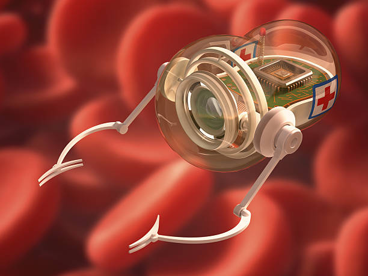
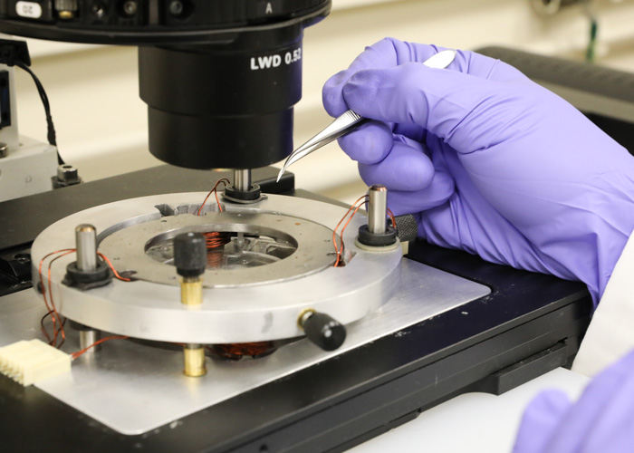

Eloheh Healthcare
Innovating Care Through Technology
About |
Milestones |
Mission |
Company Overview |
Contact
About Eloheh
Eloheh was founded in 2024 to change healthcare using nanotechnology. We care about both science and people. Our team is based in West Lafayette, Indiana.
The name "Eloheh" means "harmony" in an ancient language. We chose it because our goal is to bring balance between advanced science and patient care. Our founders—a group of engineers, neuroscientists, and public health advocates—saw a big problem: there weren’t enough safe and effective ways to treat small blood vessels deep in the body. They wanted to find a better way.
Their idea was simple but powerful. What if tiny, biocompatible robots could travel through the body and deliver medicine exactly where it’s needed? That’s how Eloheh’s nanobots were born. These nanobots use magnets to move through the bloodstream and heat-sensitive capsules to release treatment right at the problem area.
We started in a small lab on Purdue University’s research campus. At first, it was just a handful of people and one big idea. But soon, others started to notice. Within a year, Eloheh received funding from medical investors and nonprofit healthcare groups who believed in our mission. What started as a university project is now a fast-growing company focused on helping people in new and less invasive ways.
Today, we’re working on new technologies that could help treat things like strokes, aneurysms, and even some types of cancer. Our team is growing, and so is our impact. At Eloheh, we believe in science that listens to people—and in healthcare that moves with care.

Nanobots delivering care at the cellular level.
Our Milestones
- 2024 – Eloheh is founded: A small team launches Eloheh with a mission to improve microvascular treatment using nanotechnology.
- 2025 – Successful animal trials: Our magnetic nanobots pass key rabbit testing, showing precise drug delivery without surgery.
- 2025 – Funding secured: Medical investors and nonprofit health groups back Eloheh’s first clinical trial phase.
- 2026 – Hospital partnerships begin.
- 2027 – New tech for stroke and cancer in development.
Download and learn more!
Our Mission
- Innovation with integrity — Enhancing human well-being with care.
- Precision for all — Safer, smarter treatments for everyone.
- Empathy in science — Listening to patient voices.
- Better care, less burden — Reducing recovery time through noninvasive methods.
Visit our Company Overview Website
Contact Us
Email: jcschube@elohehhealth.com
© 2025 Eloheh Healthcare | Last Modified: